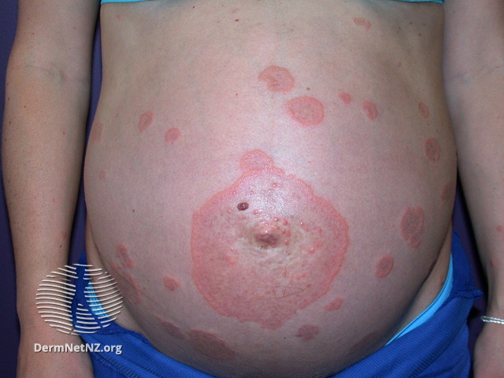
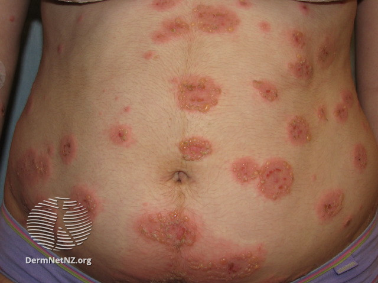

Pemphigoid Gestationis
- Rare autoimmune dermatologic disease.1
- Usually occurs in pregnancy (rarely with hydatiform mole and choriocarcinoma). 1
- Patients may have other autoimmune diseases such as Graves’ disease.1
- Previously called “herpes gestationis”.1
- Autoimmune response to placental antigen BP180:2
- BP180 (bullous pemphigoid antigen II) antigen found in placenta, umbilical cord and basement membrane of skin.2
- Abnormal human leukocyte antigens HLA-DR3 and HLA-DR4 present BP180 antigen presented to maternal immune system.2
- IgG antibodies form that binds to basement membrane of skin and cause bulla. 2
- Onset:
- Usually abruptly late pregnancy or immediately postpartum.1
- Location:
- Begins on abdomen, especially umbilical area (polymorphic eruption of pregnancy spares umbilical area).1
- Can become generalized but face, scalp, and mucous membranes usually spared.1
- Rash:
- Pruritic papules, plaques, and vesicles that can envolve into vesicles or tense bullae on erythematous base.1
- Course:
- May have spontaneous improvement late gestation.1
- Usually (75% 2) have a flare at the time of delivery/postpartum.1
- Slowly resolves weeks to months after delivery.1
-

Source: DermNet. https://dermnetnz.org/topics/pemphigoid-gestationis/.
Source: DermNet. https://dermnetnz.org/topics/pemphigoid-gestationis/.
- Skin biopsy with direct immunofluorescent assay for immunoglobulin G4.2
- Serum ELISA for IgG against BP180.2
- Recurs often in subsequent pregnancy (Only 5-8% subsequent pregnancies unaffected) often earlier and a more severe.1
- May recur with menstruation or with oral contraceptives.1
- Maternal risks:
- None.1
- Fetal risks:
- Placental insufficiency with resulting prematurity and small-for-gestational age.1
- Risk correlates with disease severity (eg, earlier onset,earlier bulla).2
- Increase risk of stillbirth not confirmed.2
- Newborn risks:
- Mild, transient lesions of pemphigoid gestationis in approximately 5-10% of neonates from passive transfer of maternal IgG antibodies that resolves in several weeks without treatment. 1
- No guidelines but may appropriate in view of fetal risk.2
- Oral antihistamines.2
- Topical corticosteroids.2
- Oral corticosteroids if severe.2
- Common Dermatologic Conditions, Clinical Updates in Women's Health Care, January 2018
- PROLOG: Obstetrics, Eighth Edition. Questions 144-147.